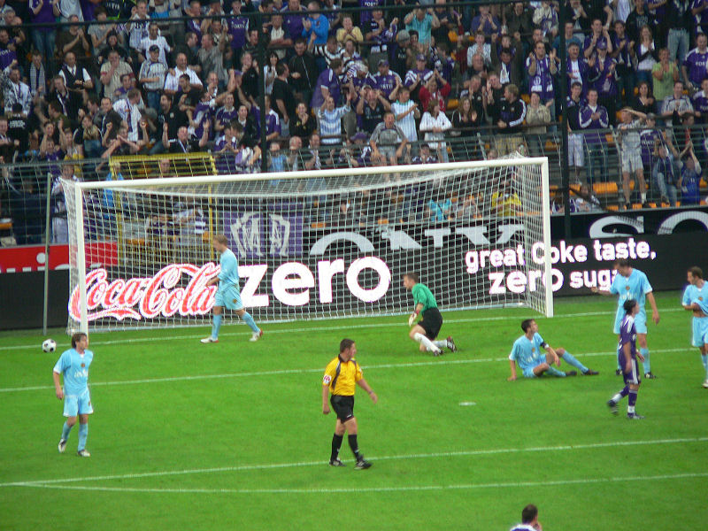
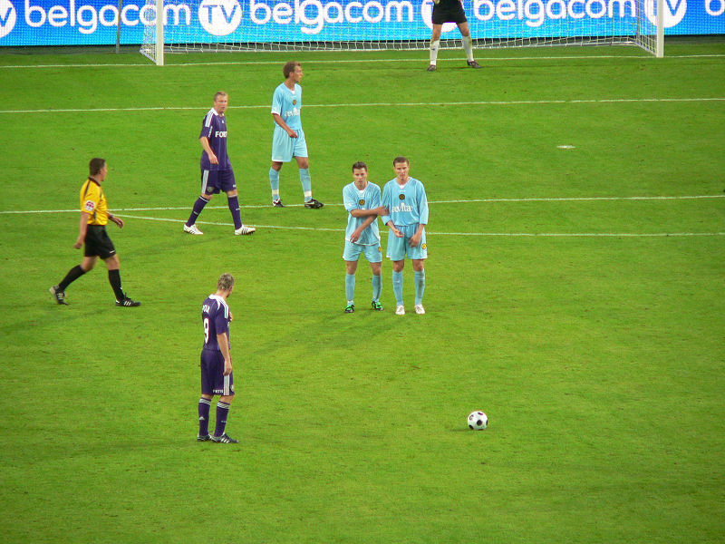

Het is in kermis in Brussel (lengte meer dan 1 km), bovendien oefent de
plaatselijke trots tegen Roda JC.
De plaatselijke casuals oefenen alvast.

De Rodaspelers arriveerden te laat. Bovendien kwam er meer publiek dan
verwacht. Hierdoor werd de wedstrijd een kwartier opgeschort.
Geen probleem, vertier zat...
... in een gemoedelijke Vlaams/Waalse atmosfeer.
Vijf minuten voor de aftrap raken de straten snel leeg.
Nog gauw kaartjes scoren van 5,-.
Cliff Mardulier met een aantal zeer trouwe
supporters.
Het beslist niet onaardige stadion van Anderlecht herbergde vanavond 12.000
toeschouwers.
Opstelling Roda JC: Castro, De Fauw, Saeijs, Meeuwis, Linssen, Janssen,
Hadouir, De Jong, De Man Vandamme, Oper.
Opstelling RSC Anderlecht: Proto, Goor, Juhasz, Kruiswijk, Rnic, Losada,
Gillet, Pola, Boussoufa, Chatelle, Frutos.
Voor aanvang van het duel nemen de supporters afscheid van Mark de Man die
van Anderlecht naar Roda verkast is.
Roda's defensie wordt regelmatig overlopen. Het is een wonder dat Anderlecht
niet snel grote afstand neemt van Roda.
Vrije trap waarbij Roda weer eens met de schrik vrij komt.
Roda had 250 supporters mee (incl. CMFC).
De scheidsrechter laat geen seconde extra spelen.

Rob alias Koffieboer attendeerde op dit doorkijkje op de Brusselse perifeer
richting "de koel".
Een volslagen belachelijke overmacht aan ME en politie bij deze
vriendschappelijke match.
Met een Juup in de hand komt men door het ganse land...
Dit is pure poëzie. Laat België voor eeuwig bestaan!

Dan gaat het plots mis als Wailewski (55') en Legear (58') voor Anderlecht
scoren.
Er moet ingegrepen worden: 88' De Jong (Knops), 60' Saeijs (Gillis), 60'
Meeuwis (Vormer), 60' Vandamme (Bodor), 60' De Man (Kah).

Het werd er iets beter op.
politiepolitiepolitiepolitiepolitiepolitiepolitiepolitiepolitiepolitiepolitiepolitiepolitiepolitiepolitiepolitiepolitiepolitiepolitiepolitiepolitiepolitiepolitie.....
Roda dreigt de eerste serieuze oefenmatch te gaan verliezen.
Maar dan, in de 80e min. ziet een verslagen doelman de bal in het net. Oper
heeft 2-1 gescoord.

Roda zonder Cissé en Lamah, maar met De Fauw bedankt het publiek.
Het mag wat kosten in Brussel.... een dubbel waterkannon, toe maar!